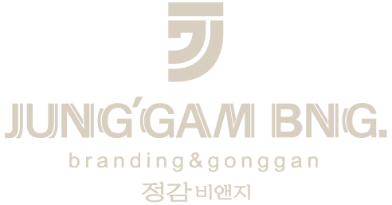
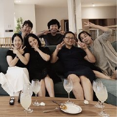
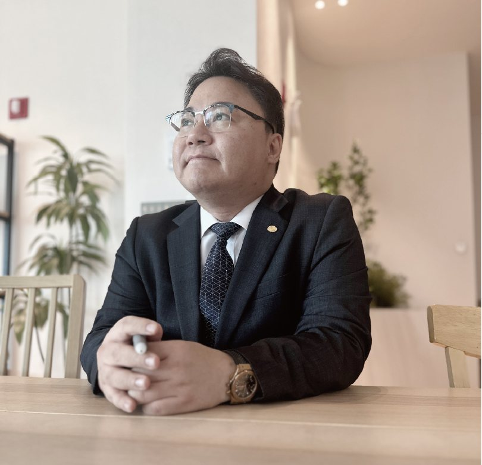
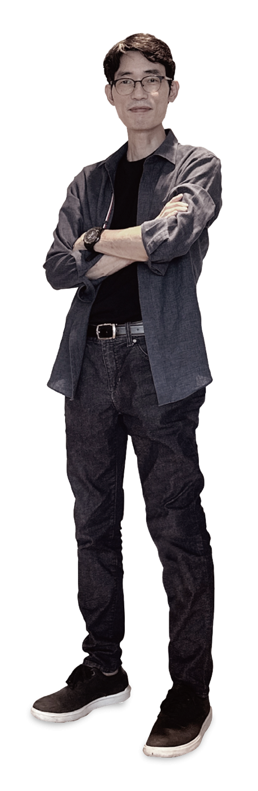
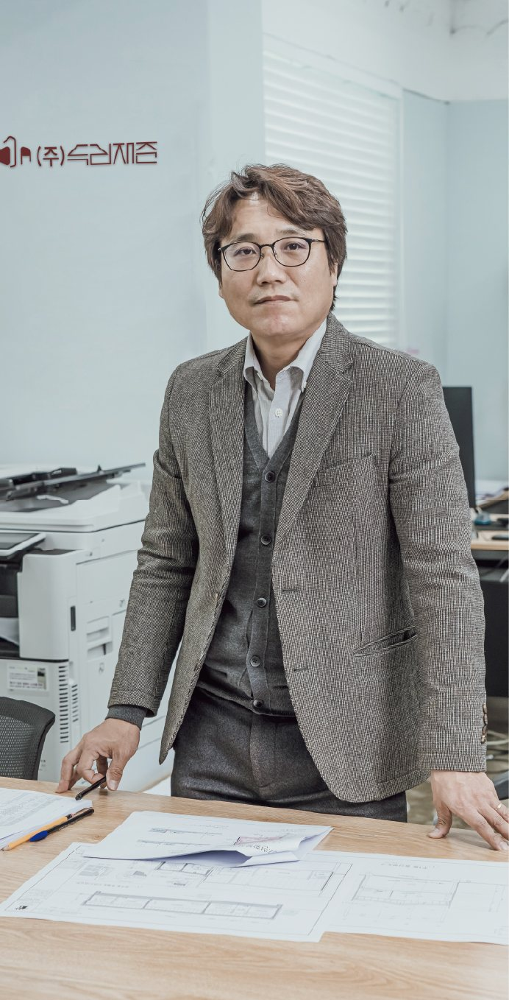

Interview
고객, 대표, 파트너, 그리고 건축가까지 — 정감호텔을 바라보는 다양한 시선을 담았습니다.
User's Comment · 고객 인터뷰
“지방에 이렇게 스마트한 AIoT 호텔이 있을 줄은 몰랐어요.”
“처음엔 무인 호텔이라 차가울 줄 알았어요. 그런데 막상 머물러보니, 기술은 편한데 공간은 오히려 더 따뜻하더라고요. 무인 체크인은 빠르고 편했고, 객실은 제 손끝 하나로 조명도 온도도 조절됐어요.”
“투자자의 관점에서도 인상 깊었습니다. 인건비를 줄이면서도 서비스 품질은 유지하는 운영 구조라니. 지방의 중소형 호텔도 이렇게 경쟁력을 가질 수 있다는 걸 직접 확인했습니다.”


Announcement · SM DNC 정감호텔 대표
“인텔리전트 AIoT 스마트호텔은 단순한 호텔이 아니라, 미래 생활의 플랫폼입니다.”
“정감호텔은 단순히 잠을 자는 곳이 아니라, 머무는 시간을 더 가치 있게 만드는 Intelligent AIoT Lifestyle Platform을 지향합니다. 기술은 사람을 위해, 공간은 머무는 사람을 위해 존재합니다.”
“이제는 대형 호텔의 시대가 아니라, 생활 속 가까운 중소형 스마트 호텔의 시대입니다. 정감호텔은 전국을 잇는 스마트 체인으로 그 변화를 이끌어 가겠습니다.”
Partners · 디자인 파트너
“정감호텔은 단순한 숙박 공간이 아니라, 사람들의 삶에 쉼표가 되어야 합니다.”
“정감호텔과 함께 브랜드를 만들며 가장 중요하게 생각한 건 ‘진정성’이었습니다. 화려하게 보이기보다, 머무는 사람이 진심으로 편안함을 느끼는 브랜드를 만들고 싶었습니다.”
“정감이라는 이름이 가진 따뜻함을 디자인으로 연결하는 일이었습니다. 누군가의 추억이 되는 공간을 디자인한다는 건, 정말 의미 있는 일이었습니다.”

Opinion
충북 청주라는 지역은 이제 단순한 지방 도시를 넘어 문화, 산업, 라이프스타일이 복합적으로 어우러진 균형 잡힌 도시로 성장하고 있습니다. 그 중심에서 정감호텔은 단순한 숙박시설이 아닌, 지역의 라이프스타일을 이끄는 중추적 거점으로서 중요한 역할을 합니다.

두리재준건축사무소 조상민 대표 인터뷰
“정감호텔은 지역성과 미래지향성을 모두 갖춘 감성 스마트 호텔의 새로운 기준입니다.”
Q. 청주 지역에서 정감호텔이 어떤 역할을 한다고 보십니까?
“호텔은 단순히 숙박의 기능을 넘어, 도시의 품격과 감성을 보여주는 창구입니다. 정감호텔은 청주라는 도시의 품격을 높이는 중추적 공간이라 평가할 수 있습니다. ‘정감’이라는 한국적 감성과 따뜻함을 지키면서도 AIoT라는 미래지향적 시스템을 도입한 건 정말 드문 사례입니다.”
Q. 정감호텔, 어떤 점이 가장 인상 깊으셨나요?
“두 가지였습니다. 하나는 감성적인 공간 디자인, 다른 하나는 정서적인 서비스 철학이었습니다. 겉으로 화려하지 않지만 공간에 ‘여유와 배려’가 녹아 있다는 느낌이 강했어요. 마치 원래 이 공간에 살고 있었던 것처럼 편안했습니다.”
Q. AIoT 스마트호텔 트렌드 측면에서 정감호텔은 어떤 전략을 보여줍니까?
“‘기술은 사람을 위하는 데 써야 한다.’ 정감호텔이 AIoT를 도입한 이유와 방향이 그 말에 정확히 들어맞습니다. 단순한 무인 시스템이 아니라, 그걸 ‘감성적 스마트함’으로 전환시킨 게 가장 인상 깊었습니다.”
Q. 정감호텔의 스마트호텔 체인화 전략에 대하여
“각 지역마다의 색과 분위기를 살리되, 기술적 편의성과 감성적 디테일은 일관되게 유지하는 것. 지금의 브랜드 철학과 품질을 지켜낸다면, 정감호텔은 전국적으로 사랑받는 ‘한국형 감성 스마트호텔 체인’으로 자리매김할 수 있을 거라 믿습니다. 진심으로 지지하고, 앞으로의 여정을 응원합니다.”
“정감호텔은 단지 잘 만든 브랜드가 아니라, 누군가의 추억이 되는 공간을 디자인하는 일이었습니다.”
09 — Interview
고객, 대표, 파트너, 건축가가 입을 모읍니다 — 정감호텔은 단순한 좋은 숙소가 아니라, 지역을 대표하는 감성 스마트 호텔 체인이라고.